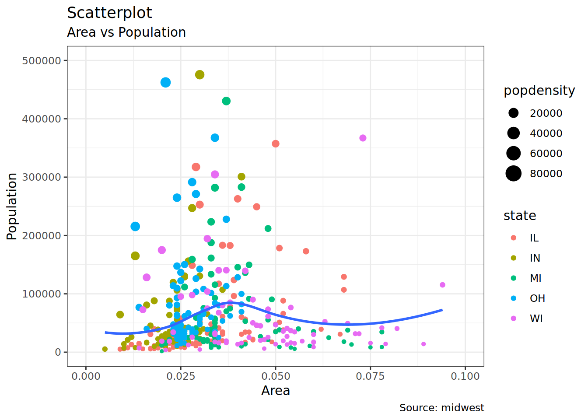
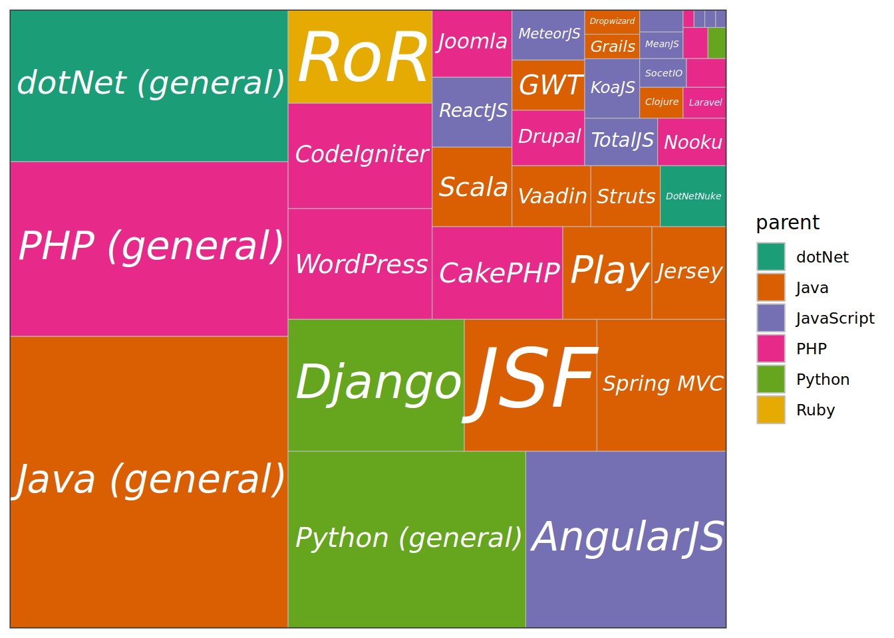
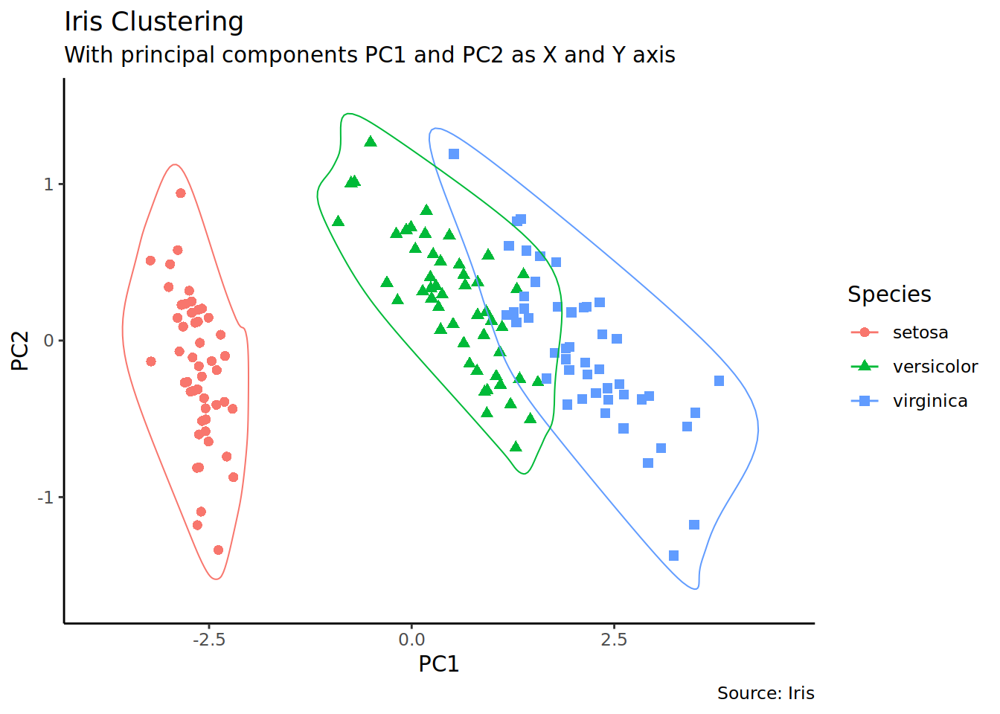

library(tidyverse)
library(ggalt)
library(ggExtra)
library(scales)
library(ggthemes)
library(treemapify)
library(ggdendro)
library(ggfortify)5 Top 50 ggplot2 Visualizations
This article and code is from r-statistics.co
查看简体中文版本: Top 50 ggplot2 可视化 (Chapter 6)
An effective chart is one that:
- Conveys the right information without distorting facts.
- Is simple but elegant. It should not force you to think much in order to get it.
- Aesthetics supports information rather that overshadow it.
- Is not overloaded with information
The list below sorts the visualizations based on its primary purpose. Primarily, there are 8 types of objectives you may construct plots. So, before you actually make the plot, try and figure what findings and relationships you would like to convey or examine through the visualization. Chances are it will fall under one (or sometimes more) of these 8 categories.
These packages are used in this article:
5.1 Correlation
The following plots help to examine how well correlated two variables are.
5.1.1 Scatterplot
The most frequently used plot for data analysis is undoubtedly the scatterplot. Whenever you want to understand the nature of relationship between two variables, invariably the first choice is the scatterplot.
theme_set(theme_bw())
options(scipen = 999)
ggplot(midwest, aes(x = area, y = poptotal)) +
geom_point(aes(color = state, size = popdensity)) +
geom_smooth(method = "loess", se = FALSE) +
xlim(c(0, 0.1)) +
ylim(c(0, 500000)) +
labs(
x = "Area",
y = "Population",
title = "Scatterplot",
subtitle = "Area vs Population",
caption = "Source: midwest"
)
5.1.2 Scatterplot With Encircling
When presenting the results, sometimes I would encirlce certain special group of points or region in the chart so as to draw the attention to those peculiar cases. This can be conveniently done using the geom_encircle() in ggalt package.
midwest_select <- midwest[
midwest$poptotal > 350000 &
midwest$poptotal <= 500000 &
midwest$area > 0.01 &
midwest$area < 0.1,
]
# Plot
ggplot(midwest, aes(x = area, y = poptotal)) +
geom_point(aes(col = state, size = popdensity)) + # draw points
geom_smooth(method = "loess", se = F) +
xlim(c(0, 0.1)) +
ylim(c(0, 500000)) + # draw smoothing line
geom_encircle(aes(x = area, y = poptotal),
data = midwest_select,
color = "red",
size = 2,
expand = 0.08
) + # encircle
labs(
subtitle = "Area Vs Population",
y = "Population",
x = "Area",
title = "Scatterplot + Encircle",
caption = "Source: midwest"
)
5.1.3 Counts Chart
The second option to overcome the problem of data points overlap is to use what is called a counts chart. Whereever there is more points overlap, the size of the circle gets bigger.
ggplot(mpg, aes(cty, hwy)) +
geom_count(aes(colour = "tomato3"), show.legend = FALSE) +
labs(
subtitle = "mpg: city vs highway mileage",
y = "hwy",
x = "cty",
title = "Counts Plot"
)
5.1.4 Bubble plot
While scatterplot lets you compare the relationship between 2 continuous variables, bubble chart serves well if you want to understand relationship within the underlying groups based on:
A Categorical variable (by changing the color) and Another continuous variable (by changing the size of points). In simpler words, bubble charts are more suitable if you have 4-Dimensional data where two of them are numeric (X and Y) and one other categorical (color) and another numeric variable (size).
The bubble chart clearly distinguishes the range of displ between the manufacturers and how the slope of lines-of-best-fit varies, providing a better visual comparison between the groups.
mpg_select <- mpg[mpg$manufacturer %in% c("audi", "ford", "honda", "hyundai"), ]
ggplot(mpg_select, aes(displ, cty)) +
geom_jitter(aes(col = manufacturer, size = hwy)) +
geom_smooth(aes(col = manufacturer), method = "lm", se = FALSE) +
labs(
subtitle = "mpg: Displacement vs City Mileage",
title = "Bubble chart"
)
5.1.5 Marginal Histogram / Boxplot
If you want to show the relationship as well as the distribution in the same chart, use the marginal histogram. It has a histogram of the X and Y variables at the margins of the scatterplot.
This can be implemented using the ggMarginal() function from the ggExtra package. Apart from a histogram, you could choose to draw a marginal boxplot or density plot by setting the respective type option.
# mpg_select <- mpg[mpg$hwy >= 35 & mpg$cty > 27, ]
g <- ggplot(mpg, aes(cty, hwy)) +
geom_count() +
geom_smooth(method = "lm", se = FALSE)
ggMarginal(g, type = "histogram", fill = "transparent")
5.2 Deviation
Compare variation in values between small number of items (or categories) with respect to a fixed reference.
5.2.1 Diverging bars
Diverging Bars is a bar chart that can handle both negative and positive values. This can be implemented by a smart tweak with geom_bar(). But the usage of geom_bar() can be quite confusing. Thats because, it can be used to make a bar chart as well as a histogram. Let me explain.
By default, geom_bar() has the stat set to count. That means, when you provide just a continuous X variable (and no Y variable), it tries to make a histogram out of the data.
In order to make a bar chart create bars instead of histogram, you need to do two things.
Set stat=identity provide both x and y inside aes() where, x is either character or factor and y is numeric. In order to make sure you get diverging bars instead of just bars, make sure, your categorical variable has 2 categories that changes values at a certain threshold of the continuous variable. In below example, the mpg from mtcars dataset is normalised by computing the z score. Those vehicles with mpg above zero are marked green and those below are marked red.
mtcars_new <- mtcars |>
mutate(
car_name = factor(rownames(mtcars)),
mpg_z = round((mpg - mean(mpg)) / sd(mpg), 2), # compute normalized mpg
mpg_type = ifelse(mpg_z < 0, "below", "above")
) |> # above / below avg flag
arrange(mpg_z) |>
as_tibble()
# Diverging Barcharts
ggplot(mtcars_new, aes(x = car_name, y = mpg_z, label = mpg_z)) +
geom_bar(stat = "identity", aes(fill = mpg_type), width = 0.5) +
scale_fill_manual(
name = "Mileage",
labels = c("Above Average", "Below Average"),
values = c("above" = "#00ba38", "below" = "#f8766d")
) +
labs(
subtitle = "Normalised mileage from 'mtcars'",
title = "Diverging Bars"
) +
# using sorted car_name to adjust the rank of the x labels
scale_x_discrete(limits = mtcars_new$car_name) +
coord_flip()
5.2.2 Diverging Lollipop Chart
Lollipop chart conveys the same information as bar chart and diverging bar. Except that it looks more modern. Instead of geom_bar(), I use geom_point() and geom_segment() to get the lollipops right. Let’s draw a lollipop using the same data I prepared in the previous example of diverging bars.
ggplot(mtcars_new, aes(x = car_name, y = mpg_z, label = mpg_z)) +
geom_point(stat = "identity", fill = "black", size = 6) +
# geom_segment draw a line between
# (x,y) and (xend,yend)
geom_segment(aes(
y = 0, x = car_name,
yend = mpg_z, xend = car_name
), color = "black") +
# label mpg_z -> geom_text
geom_text(color = "white", size = 2) +
labs(
title = "Diverging Lollipop Chart",
subtitle = "Normalized mileage from 'mtcars': Lollipop"
) +
ylim(-2.5, 2.5) +
scale_x_discrete(limits = mtcars_new$car_name) +
coord_flip()
5.2.3 Diverging Dot Plot
Dot plot conveys similar information. The principles are same as what we saw in Diverging bars, except that only point are used. Below example uses the same data prepared in the diverging bars example.
ggplot(mtcars_new, aes(x = car_name, y = mpg_z, label = mpg_z)) +
geom_point(stat = "identity", aes(color = mpg_type), size = 6) +
scale_color_manual(
name = "Mileage",
labels = c("Above Average", "Below Average"),
values = c("above" = "#00ba38", "below" = "#f8766d")
) +
geom_text(color = "white", size = 2) +
labs(
title = "Diverging Dot Plot",
subtitle = "Normalized mileage from 'mtcars': Dot plot"
) +
scale_x_discrete(limits = mtcars_new$car_name) +
coord_flip()
5.3 Ranking
Used to compare the position or performance of multiple items with respect to each other. Actual values matters somewhat less than the ranking.
5.3.1 Dot Plot
Dot plots are very similar to lollipops, but without the line and is flipped to horizontal position. It emphasizes more on the rank ordering of items with respect to actual values and how far apart are the entities with respect to each other.
# Prepare data: group mean city mileage by manufacturer.
cty_mpg <- mpg |>
group_by(manufacturer) |>
summarise(mileage = mean(cty, na.rm = TRUE)) |>
rename(make = manufacturer) |>
mutate(make = factor(make, levels = make)) |>
arrange(mileage)
ggplot(cty_mpg, aes(x = make, y = mileage)) +
geom_point(color = "tomato2", size = 3) +
geom_segment(
aes(
x = make, y = min(mileage),
xend = make, yend = max(mileage)
),
linetype = "dashed", linewidth = 0.1
) +
labs(
title = "Dot Plot",
subtitle = "Make Vs Avg. Mileage",
caption = "source: mpg"
) +
scale_x_discrete(limits = cty_mpg$make) +
coord_flip()
5.3.2 Slope Chart
Slope charts are an excellent way of comparing the positional placements between 2 points on time. At the moment, there is no builtin function to construct this. Following code serves as a pointer about how you may approach this.
# Prepare data
df <- read_csv("data/top50ggplot2/gdppercap.csv")
left_label <- paste(df$continent, round(df$`1952`), sep = ",")
right_label <- paste(df$continent, round(df$`1957`), sep = ",")
df$class <- ifelse(df$`1957` - df$`1952` < 0, "red", "green")
# Plot
ggplot(df) +
geom_segment(aes(x = 1, y = `1952`, xend = 2, yend = `1957`, color = class),
linewidth = 0.75, show.legend = FALSE
) +
geom_vline(xintercept = 1, linetype = "dashed", linewidth = 0.1) +
geom_vline(xintercept = 2, linetype = "dashed", linewidth = 0.1) +
scale_color_manual(
labels = c("Up", "Down"),
values = c("green" = "#00ba38", "red" = "#f8766d")
) +
labs(x = "", y = "Mean GdpPerCap") +
xlim(0.5, 2.5) +
ylim(0, (1.1 * max(df$`1957`, df$`1952`))) +
geom_text(
label = left_label, y = df$`1952`,
x = rep(1, nrow(df)), hjust = 1.1, size = 3.5
) +
geom_text(
label = right_label, y = df$`1957`,
x = rep(2, nrow(df)), hjust = -0.1, size = 3.5
) +
geom_text(
label = "Time 1", x = 1,
y = 1.1 * max(df$`1957`, df$`1952`),
hjust = 1.2, size = 5
) +
geom_text(
label = "Time 2", x = 2,
y = 1.1 * max(df$`1957`, df$`1952`),
hjust = -0.2, size = 5
) +
theme_classic() +
theme(
panel.background = element_blank(),
panel.grid = element_blank(),
axis.ticks = element_blank(),
axis.text.x = element_blank(),
panel.border = element_blank(),
plot.margin = unit(c(1, 2, 1, 2), "cm")
)
5.3.3 Dumbbell Plot
Dumbbell charts are a great tool if you wish to: 1. Visualize relative positions (like growth and decline) between two points in time. 2. Compare distance between two categories.
In order to get the correct ordering of the dumbbells, the Y variable should be a factor and the levels of the factor variable should be in the same order as it should appear in the plot.
# Prepare data
health <- read.csv("data/top50ggplot2/health.csv")
health$Area <- factor(health$Area,
levels = as.character(health$Area)
)
# Plot
ggplot(health, aes(x = pct_2013, xend = pct_2014, y = Area, group = Area)) +
geom_dumbbell(
color = "#a3c4dc", size = 0.75,
colour_x = "#0e668b"
) +
scale_x_continuous(labels = scales::percent) +
labs(
x = NULL,
y = NULL,
title = "Dumbbell Chart",
subtitle = "Pct Change: 2013 vs 2014",
caption = "Source: https://github.com/hrbrmstr/ggalt"
) +
theme_classic() +
theme(
plot.title = element_text(hjust = 0.5, face = "bold"),
plot.background = element_rect(fill = "#f7f7f7"),
panel.background = element_rect(fill = "#f7f7f7"),
panel.grid.minor = element_blank(),
panel.grid.major.y = element_blank(),
panel.grid.major.x = element_line(colour = "grey50"),
axis.ticks = element_blank(),
legend.position = "top",
panel.border = element_blank()
)
5.4 Distribution
When you have lots and lots of data points and want to study where and how the data points are distributed.
5.4.1 Tufte Boxplot
Tufte box plot, provided by ggthemes package is inspired by the works of Edward Tufte. Tufte’s Box plot is just a box plot made minimal and visually appealing.
ggplot(mpg, aes(manufacturer, cty)) +
geom_tufteboxplot() +
theme_tufte() + # from ggthemes
theme(axis.text.x = element_text(angle = 65, vjust = 0.6)) +
labs(
title = "Tufte Styled Boxplot",
subtitle = "City Mileage grouped by Class of vehicle",
caption = "Source: mpg",
x = "Class of Vehicle",
y = "City Mileage"
)
5.4.2 Population Pyramid
Population pyramids offer a unique way of visualizing how much population or what percentage of population fall under a certain category. The below pyramid is an excellent example of how many users are retained at each stage of a email marketing campaign funnel.
options(scipen = 999)
email_campaign_funnel <- read.csv("data/top50ggplot2/email_campaign_funnel.csv")
# X Axis Breaks and Labels
brks <- seq(-15000000, 15000000, 5000000)
lbls <- paste0(as.character(c(seq(15, 0, -5), seq(5, 15, 5))), "m")
ggplot(
email_campaign_funnel,
aes(x = Stage, y = Users, fill = Gender)
) + # Fill column
geom_bar(stat = "identity", width = 0.6) + # draw the bars
scale_y_continuous(
breaks = brks, # Breaks
labels = lbls
) + # Labels
coord_flip() + # Flip axes
labs(title = "Email Campaign Funnel") +
theme_tufte() + # Tufte theme from ggfortify
theme(
plot.title = element_text(hjust = 0.5),
axis.ticks = element_blank()
) + # Centre plot title
scale_fill_brewer(palette = "Dark2") # Color palette
5.5 Composition
5.5.1 Waffle Chart
Waffle charts is a nice way of showing the categorical composition of the total population. Though there is no direct function, it can be articulated by smartly maneuvering the ggplot2 using geom_tile() function. The below template should help you create your own waffle.
var <- mpg$class
df <- expand.grid(y = 1:10, x = 1:10)
categ_table <- round(table(var) * ((10 * 10) / (length(var))))
df$category <- factor(rep(names(categ_table), categ_table))
ggplot(df, aes(x = x, y = y, fill = category)) +
geom_tile(color = "black", linewidth = 0.5) +
scale_x_continuous(expand = c(0, 0)) +
scale_y_continuous(expand = c(0, 0), trans = "reverse") +
scale_fill_brewer(palette = "Set2") +
labs(
title = "Waffle Chart", subtitle = "'Class' of vehicles",
caption = "Source: mpg"
) +
theme(
plot.title = element_text(size = rel(1.2)),
axis.text = element_blank(),
axis.title = element_blank(),
axis.ticks = element_blank(),
legend.title = element_blank(),
legend.position = "right"
)
5.5.2 Treemap
Treemap is a nice way of displaying hierarchical data by using nested rectangles. The treemapify package provides the necessary functions to convert the data in desired format (treemapify) as well as draw the actual plot (ggplotify).
In order to create a treemap, the data must be converted to desired format using treemapify(). The important requirement is, your data must have one variable each that describes the area of the tiles, variable for fill color, variable that has the tile’s label and finally the parent group.
Once the data formatting is done, just call ggplotify() on the treemapified data.
proglangs <- read.csv("data/top50ggplot2/proglanguages.csv")
ggplot(proglangs, aes(
area = value,
fill = parent, group = parent, label = id
)) +
geom_treemap() +
geom_treemap_text(
fontface = "italic", colour = "white", place = "centre",
grow = TRUE
) +
scale_x_continuous(expand = c(0, 0)) +
scale_y_continuous(expand = c(0, 0)) +
scale_fill_brewer(palette = "Dark2")
5.6 Groups
5.6.1 Hierarchical Dendrogram
theme_set(theme_bw())
hc <- hclust(dist(USArrests), "ave") # hierarchical clustering
# plot
ggdendrogram(hc, rotate = TRUE, size = 2)
5.6.2 Clusters
It is possible to show the distinct clusters or groups using geom_encircle(). If the dataset has multiple weak features, you can compute the principal components and draw a scatterplot using PC1 and PC2 as X and Y axis.
theme_set(theme_classic())
# Compute data with principal components ------------------
df <- iris[c(1, 2, 3, 4)]
pca_mod <- prcomp(df) # compute principal components
# Data frame of principal components ----------------------
df_pc <- data.frame(pca_mod$x,
Species = iris$Species
) # dataframe of principal components
df_pc_vir <- df_pc[df_pc$Species == "virginica", ] # df for 'virginica'
df_pc_set <- df_pc[df_pc$Species == "setosa", ] # df for 'setosa'
df_pc_ver <- df_pc[df_pc$Species == "versicolor", ] # df for 'versicolor'
# Plot ----------------------------------------------------
ggplot(df_pc, aes(PC1, PC2, col = Species)) +
geom_point(aes(shape = Species), size = 2) + # draw points
labs(
title = "Iris Clustering",
subtitle = "With principal components PC1 and PC2 as X and Y axis",
caption = "Source: Iris"
) +
coord_cartesian(
xlim = 1.2 * c(min(df_pc$PC1), max(df_pc$PC1)),
ylim = 1.2 * c(min(df_pc$PC2), max(df_pc$PC2))
) + # change axis limits
geom_encircle(data = df_pc_vir, aes(x = PC1, y = PC2)) + # draw circles
geom_encircle(data = df_pc_set, aes(x = PC1, y = PC2)) +
geom_encircle(data = df_pc_ver, aes(x = PC1, y = PC2))